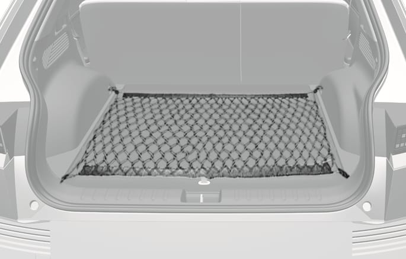

화물 고정장치(그물망)

2C_CargoNet
별도 구매한 그물망을 설치해 화물을 고정하면 화물이 움직여 파손되거나 테일게이트를 손상시키는 것을 방지할 수 있습니다.
-
주행 중 충격으로 쉽게 파손될 수 있는 물건은 차량에 싣지 마십시오.
-
부피가 과도하게 큰 화물이나 너무 많은 물건을 화물 고정장치로 고정하려 하지 마십시오.
-
화물 고정장치를 확실히 잡고 고리에 정확히 건 후 당겨서 설치하십시오. 설치 중 고리가 벗겨지거나 화물 고정장치를 놓치는 경우 고정장치가 튕겨져 나와 얼굴 등에 부상을 입힐 수 있습니다.
-
연결부 및 탄성이 있는 끈 부분이 마모되었거나 손상된 경우, 화물 고정장치를 사용하지 마십시오.